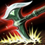

|
Damaging basic attacks and abilities apply a stack of Hemorrhage to affected enemies for 5 seconds, dealing them「 3.25 − 7.5 (based on level) (+ 7.5% bonus AD) physical damage every 1.25 seconds over the duration, 」stacking up to 5 times and refreshing the duration from subsequent damaging attacks and abilities, for a maximum of「 16.25 − 37.5 (based on level) (+ 37.5% bonus AD) physical damage with each tick. 」The total damage is increased by 75% against Monster icon.png monsters. |
| ACTIVE: Darius hefts his axe for 0.75 seconds, and then swings it around himself, dealing physical damage to nearby enemies, reduced to 35% against enemies hit by the handle. BLADE PHYSICAL DAMAGE:» 50 / 80 / 110 / 140 / 170 (+ 100 / 110 / 120 / 130 / 140% AD) Against champions and large monsters, Darius Heal power.png heals for Health icon.png 15% − 45% (based on enemies hit by the blade) of his missing health. The handle of Darius' axe will not heal him nor apply nor refresh Hemorrhage Hemorrhage.Darius is unable to declare basic attacks or cast Apprehend Apprehend or Noxian Guillotine Noxian Guillotine during Decimate. | |
| ACTIVE: Darius' next basic attack within 4 seconds gains Range icon.png 25 bonus range, becomes Excessive Force 2.png unstoppable, deals increased physical damage and Slow icon.png slows the target by 90% for 1 second.PHYSICAL DAMAGE:140 / 145 / 150 / 155 / 160% AD. If Crippling Strike kills the target, it refunds its Mana icon.png mana cost and half of its Cooldown reduction icon.png cooldown.Crippling Strike Bladework.png resets Darius' basic attack timer, and can Critical strike icon.png critically strike for (175% + 35% 35%) total damage.The attack's animation can be cancelled by casting Decimate Decimate, but the attack will still land. | |
|  | PASSIVE: Darius gains Armor penetration icon.png armor penetration.ARMOR PENETRATION:15 / 20 / 25 / 30 / 35% ACTIVE: Darius sweeps an area with his axe, Slow icon.png slowing all enemies struck by 40% for 2 seconds while Airborne icon.png pulling them in. Targets hit rebound 150 units off of Darius, remaining Airborne icon.png airborne for a total of 1 second. Darius also briefly gains Sight icon.png sight of the area around the pull. |
| ACTIVE: Darius attempts to execute the target enemy Champion icon.png champion, Bear Stance.png leaping towards them to deal Hybrid penetration icon.png true damage, increased by 0% − 100% (based on Hemorrhage.png Hemorrhage stacks), and Sight icon.png revealing the area around them for 2.5 seconds from the start of the cast time.TRUE DAMAGE:»100 / 200 / 300 (+ 75% bonus AD)If the target dies within 0.15 seconds after being hit by Noxian Guillotine, Darius causes all nearby Minion icon.png minions and Monster icon.png monsters to Flee icon.png flee from him for 3 seconds, during which they are rapidly Slow icon.png slowed by up to 99% over the duration, and is able to recast the ability within 20 seconds at no cost, which refreshes on further executions. At rank 3, Noxian Guillotine has no Mana icon.png mana cost and instead completely resets its Cooldown reduction icon.png cooldown if the target dies within the 0.15 seconds. Darius is unable to cast Decimate Decimate and Apprehend Apprehend for 0.25 seconds after Noxian Guillotine's cast time. |